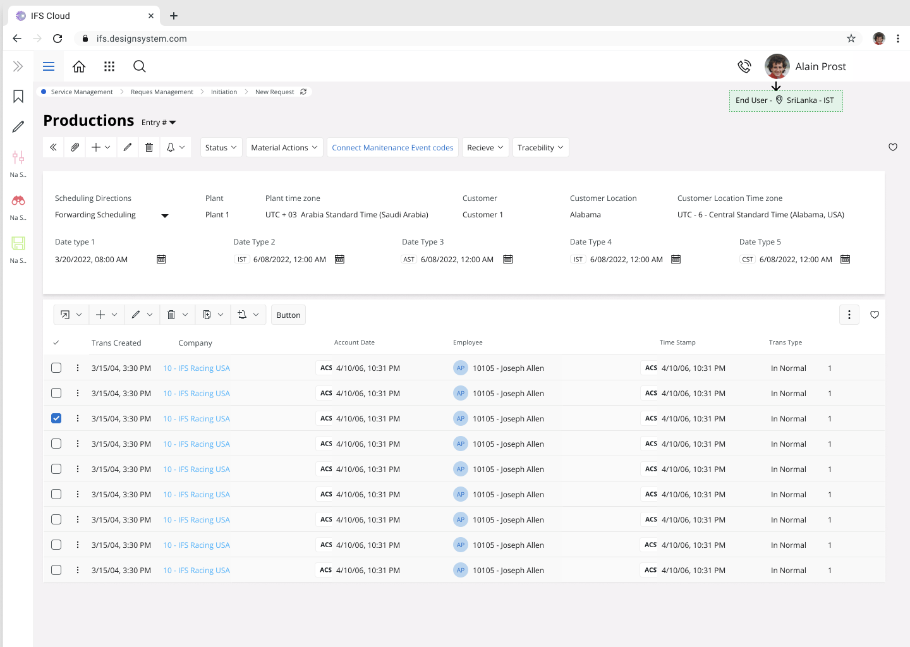
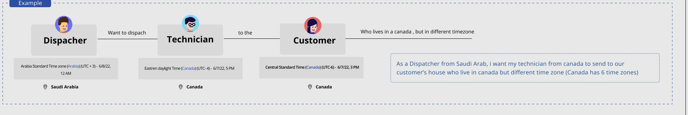
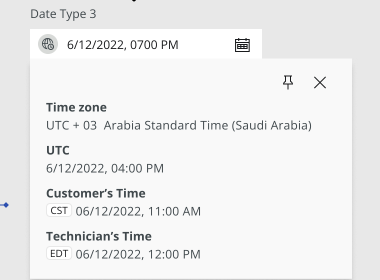
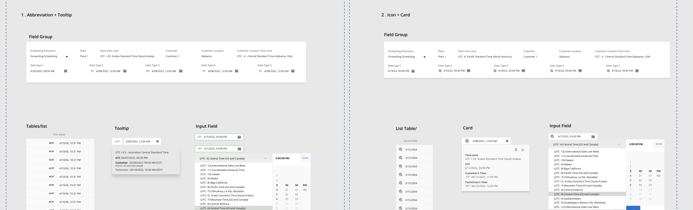
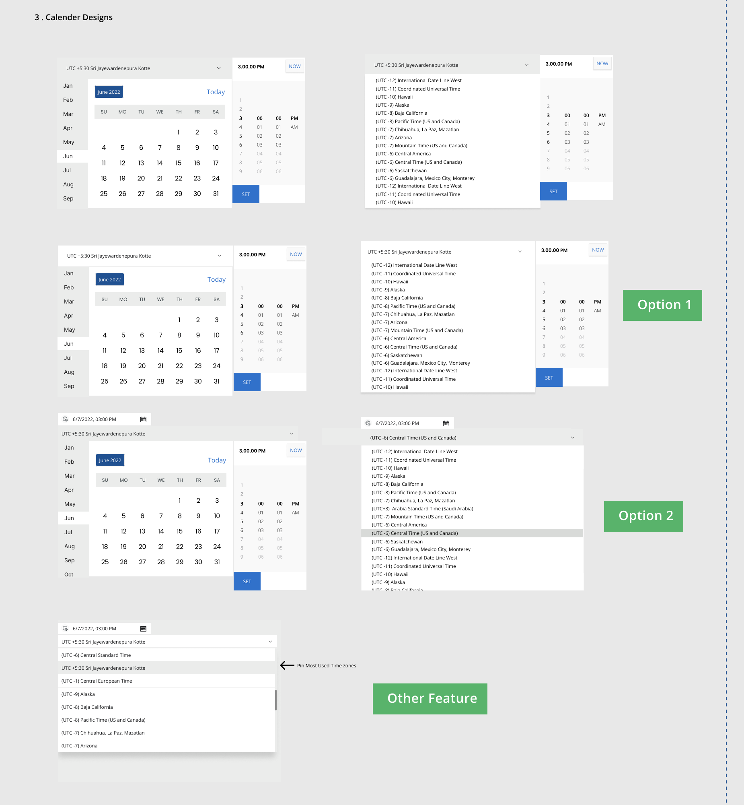
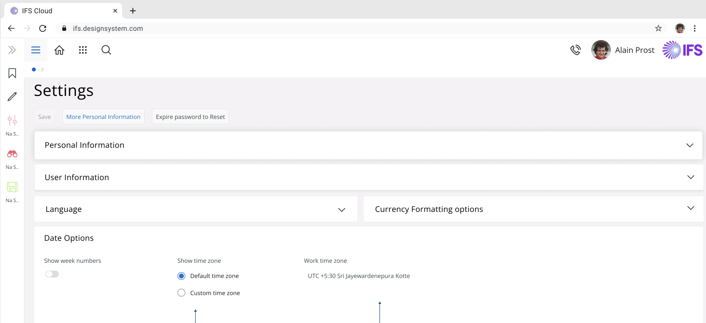
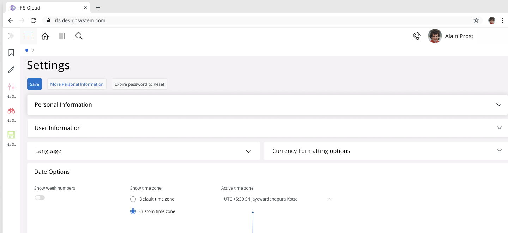

IFS Cloud · Platform-wide initiative
One date, four clocks: making timezone visible across IFS Cloud
IFS Cloud runs in dozens of countries at once, and almost every screen shows a date. A dispatcher in Saudi Arabia scheduling a technician in Canada for a customer three time zones away has no room to do that math by hand. I led the initiative that made every date in the product honest about whose clock it was reading from — across search, settings, LOVs, record selectors, lists, tables and cards — shipped over two releases.

01 · ProblemOne appointment, three time zones, and the math left to the user
Every person using IFS Cloud has two time zones that matter. There's the one their device or browser reports — their default timezone. And there's the one they're actually scheduled against, which might be a different country entirely — their working timezone. A dispatcher based in Colombo might be coordinating technicians and customers who are nowhere near Colombo at all.
As a Dispatcher from Saudi Arabia, I want my technician from Canada to be sent to our customer's house — who lives in Canada, but in a different time zone. Canada alone has six time zones.
The scenario used to scope the problemOnce a job like that is on the calendar, the confusion starts immediately. In the dispatcher's own timezone, the technician is due to arrive around 7 PM. At that exact moment, it's 11 AM for the customer, and 12 PM for the technician. Nobody involved wants to convert three times in their head just to confirm an appointment — and until this project, that's exactly what IFS Cloud asked them to do.

02 · UnderstandingFive kinds of dates, and one moment seen through four clocks
A date field in IFS Cloud looks the same everywhere: a value, maybe a calendar icon. Underneath, it doesn't behave the same way twice. Before any screen could show a timezone next to a date, the five ways a date could actually be sourced needed names and rules of their own:
Not timezone-aware
A plain date or time value with no conversion logic at all — the baseline every other type was measured against.
Linked to an object, stored in UTC
The value is stored in UTC and always displayed in the timezone of whatever it's attached to — a Plant, a Site, a Customer. A date tied to a Plant in Saudi Arabia shows Arabia Standard Time (UTC+3), no matter who's looking at it.
Linked to the viewer, stored in UTC
Same UTC storage, but displayed in the viewer's own timezone instead. Someone in Sri Lanka sees that same instant converted to IST (UTC+5:30).
Linked to an object, stored locally
The raw value already belongs to that object's timezone and is shown as-is, with no conversion at read time.
Linked to the viewer's working timezone
Displayed against whichever timezone the person has actively set as their working timezone — not necessarily the one their browser reports.
One moment, four clocks
The scheduling card made the problem concrete. A single record could legitimately show the same instant four different ways at once, and all four needed to be visible without turning the row into a spreadsheet:
| Whose time | What they'd see |
|---|---|
| My date, as entered | 6/08/2022, 12:00 AM |
| Stored value (UTC) | 6/07/2022, 09:00 PM |
| Customer's time zone | 6/07/2022, 03:00 PM |
| Technician's time zone | 6/07/2022, 05:00 PM |

Four clocks, one underlying instant. A dispatcher, their technician and a customer could each look at the same record and see a time that was correct for them, without anyone converting anything by hand.
03 · OptionsThree ways to show a timezone without cluttering the screen
IFS Cloud is dense. A date sitting in a list row already competes with a dozen other columns; a date inside a record selector has a whole calendar and time picker built around it. I explored three ways to put a timezone next to a date without it reading as noise:


04 · DecisionNone of the three won outright, so density decided
None of the three won outright — the surfaces were too different in size and density for one answer to fit all of them. What shipped was contextual: a quiet abbreviation for tight spaces like list and table cells and search, the expandable card for record selectors and LOVs where someone genuinely needed to compare times, and the calendar treatment built directly into the date and date-range pickers — including the Quick Ranges panel I later built into the date filter redesign, which grew out of this same initiative.
05 · Final designEverywhere a date could hide: five areas of the product
The initiative touched five areas of the product, each with its own constraints on space and context:
- Search — date search fields gained a visible working-timezone indicator and a timezone-aware Quick Ranges panel.
- Configuration — a new Date Options section in Settings: a toggle to show or hide timezone information globally, and a choice between Default and Working timezone. Pick Working, and the field switches from read-only text to a dropdown, with your most-used zones pinned to the top.


- LOVs — value lists that included a date carried their timezone with them, so picking a value never silently swapped which clock you were looking at.
- Record selectors — the calendar and time widget respond live: change the timezone dropdown and the whole picker's date and time recalculate in front of you, instead of waiting for a save.
- Lists, tables and cards — the highest-density surfaces got the card treatment: the same instant broken into every timezone that mattered, on demand, without adding a column.
Getting the edge cases right
- Creating a value works exactly as before. The only difference is a small indicator showing which timezone that field is reading from.
- Clearing a date doesn't clear its timezone. The field goes empty; the timezone context stays, ready for the next value.
- A toast confirms the change after saving, so switching your working timezone in Settings never leaves you guessing whether it took.
06 · ResultA consistent answer to “whose clock is this?”
This wasn't a project with a single conversion number to report. It was infrastructure: a consistent answer to "whose clock is this?" that had to hold up the same way across search, settings, LOVs, record selectors, lists, tables and cards, for every country IFS Cloud runs in. The scale that made it "huge" in the first place is exactly what makes it hard to compress into one before/after metric — so here are the honest counts instead.
What I took from it
- One visual pattern doesn't have to mean one underlying behaviour. Five different ways of sourcing a timezone could all show up as the same quiet abbreviation next to a date — the complexity belonged in the data model, not on the screen.
- Density should decide the treatment, not consistency for its own sake. A list row, a record selector and a settings page all needed timezone to be visible, but forcing the same component into all three would have made the simplest surfaces the most cluttered.
- Infrastructure work doesn't always have a headline metric. The real measure of success here was that an initiative this wide shipped coherently, across two releases, without anyone needing to do timezone math by hand.